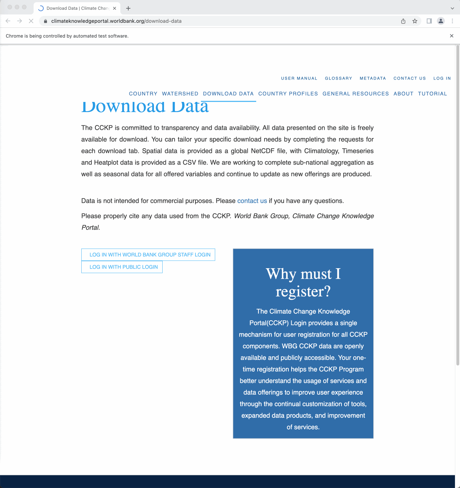
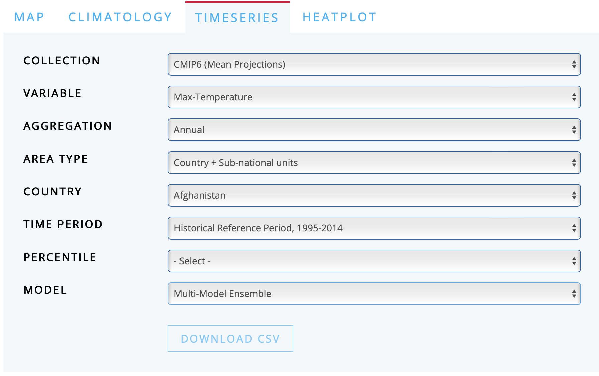

Provide your Python Selenium code to log in with public login.
I suggest you to sign in with your LinkedIn account.
Please remove your ID and password in your Python script when submitting it to Canvas.

Q1b
Provide your Python Selenium code to download the CSV file for the COLLECTION CMIP6 (Mean Projections)’s 50th PERCENTILE of Max-Temperature VARIABLE in the Historical Reference Period, 1995-2014 TIME PERIOD for each country in the COUNTRY menu from the Multi-Model Ensemble MODEL.
The Selenium code should do the followings:
Go to the TIMESERIES tab.
Select the proper menus.
Loop over the COUNTRY menu.
In the loop, use time.sleep(10) for each download.
Consider using try-except to prevent the Selenium code from getting errors.

Figure 2. Screenshot of the Menu Selection for Historical Reference Period, 1995-2014
Q1c
Provide your Python Selenium code to download the CSV file for the COLLECTION CMIP6 (Mean Projections)’s 50th PERCENTILE of Max-Temperature VARIABLE in the Projections, 2015-2100 TIME PERIOD for each country in COUNTRY menu for each of the three SCENARIOs, SSP1-1.9, SSP1-2.6, and SSP2-4.5, from the Multi-Model Ensemble.
The Selenium code should do the followings:
Go to TIMESERIES tab.
Select the proper menus.
Loop over the COUNTRY menu and the SCENARIO menu.
In the loop, use time.sleep(10) for each download.
Always consider using try-except to prevent the Selenium code from getting errors.
Q1d
From the downloaded CSV files, consider only the first two columns for Q1d.
The first two columns in the downloaded CSV file are year and average temperature in a country.
The rest of the columns in the downloaded CSV file is about temperatures in several regions in a country.
Create the following two DataFrames.
The tidy year-country level DataFrame for Median (50th) level of Max-Temperature in Historical Reference Period, 1995-2014 for all the three SCENARIOs, SSP1-1.9, SSP1-2.6, and SSP2-4.5.
The tidy year-country level DataFrame for Median (50th) level of Max-Temperature in the time period, Projection, 2015-2100 for all the three SCENARIOs, SSP1-1.9, SSP1-2.6, and SSP2-4.5.
Q1d
Combine the two tidy DataFrames.
Merge the combined tidy DataFrame with the DataFrame for country groups, provided by the following CSV file:
Provide both (1) seaborn code and (2) a simple comment to describe how the yearly trend of mean temperature varies by region and scenario.
Source Code
---title: "DANL 210: Data Preparation and Management<br>Homework Assignment 5"author: "Byeong-Hak Choe"format: html: code-fold: true code-summary: "Show the code" code-tools: trueexecute: echo: true eval: false message: false warning: false---# Direction for Homework Assignment 5- Go to the following website about Climate Change Knowledge Portal at the World Bank - [https://climateknowledgeportal.worldbank.org/download-data](https://climateknowledgeportal.worldbank.org/download-data).<br>## Initiating the Chorme browser with the specified download folder```{python}options = webdriver.ChromeOptions()download_folder ="/Users/byeong-hakchoe/Google Drive/suny-geneseo/spring2023/lecture_codes/data"p = {"download.default_directory" : download_folder, "safebrowsing.enabled" : "false"}options.add_experimental_option("prefs", p)driver = webdriver.Chrome(chrome_options = options, executable_path ="chromedriver")```<br>## Getting a list of files in a folder```{python}import osfile_list = os.listdir(download_folder)```<br>## Q1a- Provide your Python Selenium code to log in with public login. - I suggest you to sign in with your LinkedIn account. - Please remove your ID and password in your Python script when submitting it to Canvas.```{r, echo=FALSE, eval = T, out.width='100%', fig.align='center'}knitr::include_graphics("lec_figs/wb_climatechange_knowledge_selenium.gif")```<br>## Q1b- Provide your Python Selenium code to download the CSV file for the COLLECTION `CMIP6 (Mean Projections)`'s `50th` PERCENTILE of `Max-Temperature` VARIABLE in the `Historical Reference Period, 1995-2014` TIME PERIOD for each country in the COUNTRY menu from the `Multi-Model Ensemble` MODEL.- The Selenium code should do the followings: 1. Go to the TIMESERIES tab. 2. Select the proper menus. 3. Loop over the COUNTRY menu. - In the loop, use `time.sleep(10)` for each download. - Consider using `try-except` to prevent the Selenium code from getting errors.<br>```{r, echo=FALSE, eval = T, out.width='100%', fig.align='center', fig.cap=" Figure 2. Screenshot of the Menu Selection for Historical Reference Period, 1995-2014"}knitr::include_graphics("lec_figs/wb_cckp_historical_temp.png")```<br>## Q1c- Provide your Python Selenium code to download the CSV file for the COLLECTION `CMIP6 (Mean Projections)`'s `50th` PERCENTILE of `Max-Temperature` VARIABLE in the `Projections, 2015-2100` TIME PERIOD for each country in COUNTRY menu for each of the three SCENARIOs, `SSP1-1.9`, `SSP1-2.6`, and `SSP2-4.5`, from the `Multi-Model Ensemble`.- The Selenium code should do the followings: 1. Go to TIMESERIES tab. 2. Select the proper menus. 3. Loop over the COUNTRY menu and the SCENARIO menu. - In the loop, use `time.sleep(10)` for each download. - Always consider using `try-except` to prevent the Selenium code from getting errors.<br>## Q1d- From the downloaded CSV files, consider only the first two columns for Q1d. - The first two columns in the downloaded CSV file are year and average temperature in a country. - The rest of the columns in the downloaded CSV file is about temperatures in several regions in a country.- Create the following two DataFrames. - 1. The tidy year-country level DataFrame for `Median (50th)` level of `Max-Temperature` in `Historical Reference Period, 1995-2014` for all the three SCENARIOs, `SSP1-1.9`, `SSP1-2.6`, and `SSP2-4.5`. - 2. The tidy year-country level DataFrame for `Median (50th)` level of `Max-Temperature` in the time period, `Projection, 2015-2100` for all the three SCENARIOs, `SSP1-1.9`, `SSP1-2.6`, and `SSP2-4.5`.<br>## Q1d- Combine the two tidy DataFrames.- Merge the combined tidy DataFrame with the DataFrame for country groups, provided by the following CSV file: - [https://bcdanl.github.io/data/worldbank_country_group.csv](https://bcdanl.github.io/data/worldbank_country_group.csv)- Provide both (1) seaborn code and (2) a simple comment to describe how the yearly trend of mean temperature varies by region and scenario.